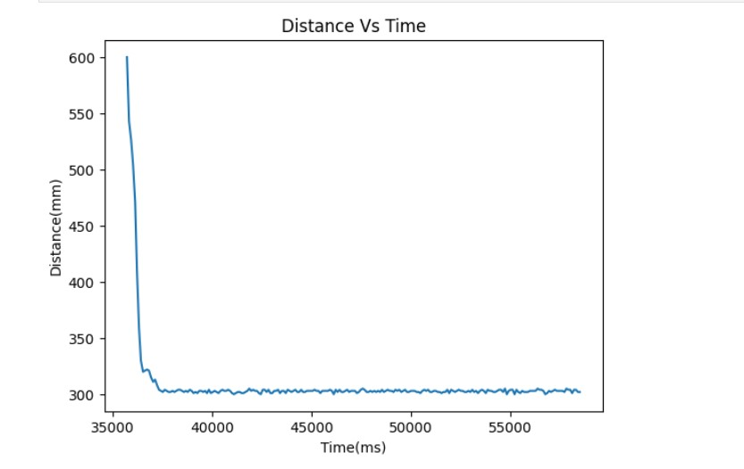
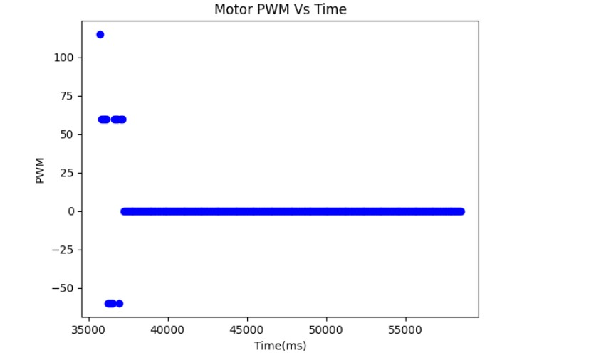

The purpose of this lab is to get experience with PID control: I am going to implement PID control in my robot to finish the position control task. Basically the idea of this task is to have my robot drive as fast as possible towards the wall and stop when it is exactly 1 foot (304 mm) away from the wall using feedback from the ToF distance sensor. The PID controller in this task will be controlling the speed of my robot by considering the distance between my robot and the wall.
To send command to the robot over bluetooth , I wrote a new case that start the robot by changing the flag to true,so that in the while main loop it will execute the PID control when the flag is ture.And to get the PID data, distance and time data from the robot.I also write a handler to retrieve the data from robot. In this way we can tune our PID control based on the PID data plot . The code snippet for the computer end is shown below:
The code that robot handle the command from the computer, The code snippet is shown below:
During the lab task, I established a specific distance as the target for implementing the PID control. The discrepancy between the measured distance and the established distance was regarded as the error. The PID control primarily comprises three parameters: Kp, Ki, and Kd. Kp is responsible for controlling the speed at which the steering turns while moving towards the target point. Ki adds more steering action to improve stability, whereas Kd is employed to damp oscillation. To choose the parameters, I initiated the testing process by only setting Kp to 0.5 and then gradually decreasing it. When the car responded quickly and moved towards the wall, I introduced Ki to decrease the overshoot and enhance control stability. Finally, I added Kd when the car began oscillating around the target point to minimize oscillation. The values for Kp, Ki, and Kd were determined to be 0.3, 0.001, and 60, respectively. It is important to note that an excessive integral can cause oscillation , which is why Ki is much smaller than Kp.
Since the TOF sensor has measurement error , so I set my tolerance for the distance is 8mm. Therefore, form range 292 to 308 , the robot will stop.The sampling time of TOF is fast enough for the PID contol process to update the new pwm for the motor
In this lab,I chose the task A. I wrote a pid function that is called in the main loop() when the computer send start command ,the code for the pid is shown below: The code begins by retrieving the distance from the TOF sensor through the use of the get_tof() function. Once the distance is obtained, the code calculates the error. This error value is then fed as an input into the PID control system, which generates the PWM value for controlling the motor.
The video below shows the result when I only set the KP= 0.3 for the PID ,and we can see there is oscillation:
After setting the KI=0.001 and KD=60 , The PID can contorll the motor stop at 300mm form the wall:
The figure below is distance measured versus time:
The figure below is PWM versus time,when it is 300mm away form the wall, it should stop so the pwm is 0:
In PID control, the integrator is responsible for accumulating the error signal over time and producing a corrective output to the system. However, in certain situations, the integrator can increase in the output signal that can cause instability and oscillations in the system.For example, it can make the pwm generated larger than 255, thereforeI set a upper and lower bound for the generated pwm